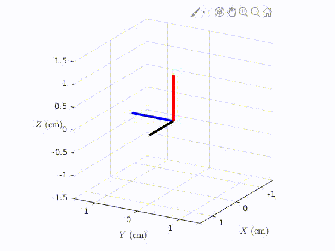

David Yaylali
Physics and Engineering
The University of Arizona

Included here are a selection of neat computational tools and analyses. I'll continue to upload new material as I'm able.
When planning an interplanetary mission, say, from Earth to Mars, it's important to plan your route wisely. It's also important to plan your departure time. At any given time, Earth and Mars will be in different places along their elliptical orbits, and move along their orbits at different speeds. As a result, the needed fuel and time-of-flight for the trip vary drastically depending on the this departure time. This information is efficiently encoded in the porkchop plot,
 I guess they're called this because they can vaguely resemble a porkchop... I think whoever named it just forgot their lunch that day and was hungry.
I guess they're called this because they can vaguely resemble a porkchop... I think whoever named it just forgot their lunch that day and was hungry.
The idea behind porkchop plots is simple: along the x-axis is the departure time (usually in units of days or months for interplanetary missions), and along the y-axis is arrival time at the destination planet. Upon these axes, one can plot a variety of things, including time-of-flight for the journey and the amount of fuel needed. The latter quantity is typically plotted indirectly; it is often convenient to separately plot the characteristic energy ${\rm C}_3$, which describes the needed energy to initiate the trip, and $v_{\infty}^{-}$, which describes the arrival speed with respect to the target planet. This is convenient since the trip is typically initiated by large launch systems which in many cases expend their fuel completely by the time the spacecraft leaves the influence of the Earth. The quantity $v_{\infty}^{-}$ then characterizes the amount of on-board fuel needed (i.e., the internal fuel within the spacecraft) in order to "stop" at the destination planet.
Ideally, it would be nice to reduce all three quantities (TOF, ${\rm C}_3$, and $v_{\infty}^{-}$) simultaneously. Since fuel spent and time-of-flight are typically inversely proportional, however, there is some trade-off that is invariably necessary. Porkchop plots are key to understanding these necessary trade-offs in order to plan the mission.
Attached here is a simple MATLAB code used to generate porkchop plots for trajectories between any two planets within the Solar System. The date for the trip is a free parameter that can be set. For the default choices within the code (Earth-to-Mars, 2005), this code outputs...
 Note that to run this code, the MATLAB Aerospace Toolbox along with the JPL Ephemerides support package is needed. The code works by solving Lambert's problem at each grid-point in the porkchop plot. The specific method of solution to Lambert's problem used in this code is outlined in Section 5.3 of Orbital Mechanics for Engineering Students, by H. Curtis (2005).
Note that to run this code, the MATLAB Aerospace Toolbox along with the JPL Ephemerides support package is needed. The code works by solving Lambert's problem at each grid-point in the porkchop plot. The specific method of solution to Lambert's problem used in this code is outlined in Section 5.3 of Orbital Mechanics for Engineering Students, by H. Curtis (2005).
In cooperative consensus control, vehicles share information with one another, and this shared information can be used to build control laws which bring the system as a whole to some consensus in position and velocity.

For instance, for the above system, SC1 receives information from both SC2 and SC3, while SC2 and SC3 only receive information from SC1. For this communication topology, a simple consensus control law takes the form \begin{align} u_1 &= a_{12}(x_2-x_1) + a_{13}(x_3-x_1) \\ u_2 &= a_{21}(x_1-x_2) \\ u_3 &= a_{31}(x_1-x_3) \end{align} where $x_i$ is the state of spacecraft $i$. The $a_{ij}$ coefficients capture the communication flow in the system, and in this case only the non-zero $a_{ij}$ factors are shown. Since SC2 and SC3 do not communicate, SC2 does not know the position/velocity of SC3 and vise versa... that's why there's no term in the control law proportional to $(x_2-x_3)$.
This control law therefore feeds back the position and velocity differences to the dynamics of the system (when this information is available), so that as the system evolves these position/velocity differences are driven to zero. That is, this control protocol drives the system to consensus.
Under control laws of the above type, the closed-loop dynamics can be written in a very concise way: $$\dot {\pmb x} = (I_N \otimes A - L \otimes BK)\pmb{x}.$$ Here, $A$ captures the natural dynamics of each vehicle, $B$ captures Newton's second law (that forces cause accelerations), $K$ captures the relative weights of the position and velocity feedback terms (taken to be 1-to-1 in the $u_i$ control laws written above), and $\pmb{x}$ is a vector containing the collection of all vehicle states. The graph Laplacian matrix $L$ captures the communication topology.
Consensus control laws can be used to build vehicle formations. As discussed in my masters thesis (see § 3.3), one way to do this is to define virtual leaders, and build a leader-follower consensus control law for each vehicle. If the virtual leaders follow some prescribed trajectory, the physical vehicles will then be drawn to these desired trajectories, regardless of initial conditions.
As a neat example, consider the Laser Interferometer Space Antenna (LISA), a proposed space-based gravitational wave observatory.
 The idea for this mission is to place three spacecraft in a triangular formation, the center of which orbits the Sun. The spacecraft are therefore in a circular relative orbit about each other... that is, if you remain at the center of the formation, you will see the three spacecraft move along a circle, separated by 120°.
The idea for this mission is to place three spacecraft in a triangular formation, the center of which orbits the Sun. The spacecraft are therefore in a circular relative orbit about each other... that is, if you remain at the center of the formation, you will see the three spacecraft move along a circle, separated by 120°.
Imagine how such a formation is initially built. One would assume that all three SC are launched by a single launch vehicle to the proper Earth-trailing heliocentric orbit:
 Taking the position of the initially bundled spacecraft as the center of relative-orbit coordinate system, one can now utilize three virtual leader-follower consensus control laws to properly position each spacecraft along a circular relative orbit. The formation of the LISA constellation under this control protocol is illustrated below:
Taking the position of the initially bundled spacecraft as the center of relative-orbit coordinate system, one can now utilize three virtual leader-follower consensus control laws to properly position each spacecraft along a circular relative orbit. The formation of the LISA constellation under this control protocol is illustrated below:
 We can also plot the LVLH position vector magnitudes and interspacecraft distances as a function of time. The former should approach a constant (indicating circular relative orbits); the latter should approach a constant as well, indicating that the formation becomes a constant equilateral triangle.
We can also plot the LVLH position vector magnitudes and interspacecraft distances as a function of time. The former should approach a constant (indicating circular relative orbits); the latter should approach a constant as well, indicating that the formation becomes a constant equilateral triangle.

Again, for a more detailed description of this maneuver, see § 3.3 of my masters thesis. The MATLAB code used to simulate this system (and generate the above animation) can be downloaded here.
The natural motion of a rotating body can be completely surprising to most people (including myself!) when first viewed in the proper setting. For instance, when the "falling" motion of a body is removed from the picture (as it is in orbit, on the ISS), a rotating body such as this "T-handle" behaves very strangely:
This motion of course arises from the coupling between the orthoginal angular velocity components in Euler's equations (with zero external torque), \begin{align} I_1 \dot{\omega}_1 + (I_3-I_2) \omega_2 \omega_3 &= 0 \\ I_2 \dot{\omega}_2 + (I_1-I_3) \omega_1 \omega_3 &= 0 \\ I_3 \dot{\omega}_3 + (I_2-I_1) \omega_1 \omega_2 &= 0, \end{align} where $I_i$ are the principle moments of inertia of the rotating body and $\omega_i$ are the components of angular velocity (in the rotating frame fixed to the body) with respect to the principle axes. For a very nice exposition of this material, written by my undergraduate research adviser Nick Wheeler, see here. Long story short, a rigid body such as a book or this T-handle can stably tumble about its "shortest" and "longest" axes, but not about its intermediate axis.
Simulating this rotating "T-handle" numerically is a very illuminating exercise, as it involves conceptualization of and transformation between rotating reference frames, dynamics of rigid bodies, and numerical integration. This cute little code performs this within MATLAB in the formalism of the Lie group ${\rm SO}(3)$, the rotation group. The state of the rigid body at any time is represented by the group members $R$, which are simply the rotation matrices representing its current orientation. In terms of ${\rm SO}(3)$, Euler's equations (without torque) can be expressed as \[ J \dot{\boldsymbol{\omega}} = - \boldsymbol{\omega}^{\times}J \boldsymbol{\omega}. \] Using this code, one finds a very nice replication of the strange behavior seen in the above video (the black, red, and blue rods represent the (orthogonal) principle axis corresponding to the T-handle): 